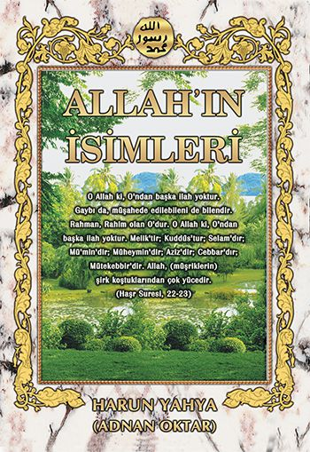
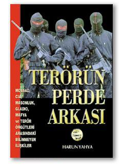

Daha önce böyle bir kitap okumuş olamazsınız. Çünkü böyle bir kitap daha önce hiç yazılmadı...  Harun Yahya serisinin en önemli kitaplarından biri, kuşkusuz, aynı zamanda serinin en hacimli çalışması olan (yaklaşık 1000 sayfa) YENİ MASONİK DÜZEN adlı dev eserdir. Kristof Kolomb'un Amerika'yı keşfinin perde arkasını anlatarak başlayan kitap, Avrupa'da din-dışı bir sosyal ve siyasi düzenin kuruluşunu, bu düzenin kurulmasında Yahudiler ve Masonların birlikte oynadıkları rolü, bu düzenin 20. yüzyıldaki etkilerini anlatıyor. İsrail'in gizli dış politikasını, Üçüncü Dünya faşistleriyle kurduğu ittifakları ve oluşturmaya çalıştığı "Anti-İslami Enternasyonal"i de bu kitaptan öğrenmek mümkün.Kitabın temel tezi, önsözünde şöyle özetlenmiş:Bu kitap, görünüşte birbirinden çok farklı olan ve tarihsel açıdan aynı kategoriye konamayacak olayları incelemektedir. Kristof Kolomb'un Amerika keşfinden Nazi Almanyası'na, Protestan reformundan Bosna-Hersek'te akan Müslüman kanlarına kadar birbiriyle son derece ilgisiz gözüken konular kitabın içinde birbiri ardına analiz edilmektedir. Önemli olan nokta da zaten budur. Çünkü bu kitapta öne sürülen -ve de ispatlanan- ana fikir, tarihsel olayların arkasında, yüzeysel bir bakışla fark edilemeyecek bazı gizli gerçekler olduğudur. Birbirinden bağımsız gibi gözüken olaylar, gerçekte çok önemli bazı bağlantılara sahip olabilirler. Ve bu bağlantıları keşfedip, küçük parçaları birleştirerek dev bir bütüne ulaşmak mümkündür.Bu kitap, işte bu küçük parçaları birleştirerek dev bir bütüne ulaşmakta ve Ortaçağ'ın sonundan günümüze uzanan dünya tarihinin içindeki gizli bir dinamiği ortaya çıkarmaktadır. Bu dinamik, bugün yaşadığımız önemli bazı sosyal ve siyasi olaylarda da etkilerini gösterir. 1000 SAYFA, 285 RESİM
Harun Yahya serisinin en önemli kitaplarından biri, kuşkusuz, aynı zamanda serinin en hacimli çalışması olan (yaklaşık 1000 sayfa) YENİ MASONİK DÜZEN adlı dev eserdir. Kristof Kolomb'un Amerika'yı keşfinin perde arkasını anlatarak başlayan kitap, Avrupa'da din-dışı bir sosyal ve siyasi düzenin kuruluşunu, bu düzenin kurulmasında Yahudiler ve Masonların birlikte oynadıkları rolü, bu düzenin 20. yüzyıldaki etkilerini anlatıyor. İsrail'in gizli dış politikasını, Üçüncü Dünya faşistleriyle kurduğu ittifakları ve oluşturmaya çalıştığı "Anti-İslami Enternasyonal"i de bu kitaptan öğrenmek mümkün.Kitabın temel tezi, önsözünde şöyle özetlenmiş:Bu kitap, görünüşte birbirinden çok farklı olan ve tarihsel açıdan aynı kategoriye konamayacak olayları incelemektedir. Kristof Kolomb'un Amerika keşfinden Nazi Almanyası'na, Protestan reformundan Bosna-Hersek'te akan Müslüman kanlarına kadar birbiriyle son derece ilgisiz gözüken konular kitabın içinde birbiri ardına analiz edilmektedir. Önemli olan nokta da zaten budur. Çünkü bu kitapta öne sürülen -ve de ispatlanan- ana fikir, tarihsel olayların arkasında, yüzeysel bir bakışla fark edilemeyecek bazı gizli gerçekler olduğudur. Birbirinden bağımsız gibi gözüken olaylar, gerçekte çok önemli bazı bağlantılara sahip olabilirler. Ve bu bağlantıları keşfedip, küçük parçaları birleştirerek dev bir bütüne ulaşmak mümkündür.Bu kitap, işte bu küçük parçaları birleştirerek dev bir bütüne ulaşmakta ve Ortaçağ'ın sonundan günümüze uzanan dünya tarihinin içindeki gizli bir dinamiği ortaya çıkarmaktadır. Bu dinamik, bugün yaşadığımız önemli bazı sosyal ve siyasi olaylarda da etkilerini gösterir. 1000 SAYFA, 285 RESİM
YENİ MASONİK DÜZEN
YAHUDİLİK VE MASONLUK
Masonluğun iç yüzünü ortaya çıkaran ünlü klasik...  "Yahudilik ve Masonluk" isimli kitabın genel görüntüsü kitabın önsözünde şöyle açıklanmaktadır:"Hakkında 60 binden fazla kitap yazılmış olmasına rağmen masonluğun ortaya çıkışı, hedefleri ve hayatımızdaki rolü toplumumuz tarafından yeteri kadar anlaşılmış değildir.Beynelmilel bir kuruluş olan masonluğun yahudilikle çok yakın bir alakası vardır. Bu sebeple muharref Tevrat inananlarının gayelerini, hedeflerini, dünyaya anlatmadan masonluğun tarifini yapmak çok güç olmaktadır.Yahudiler hakkında bilinenler, yalnızca birkaç roman veya filmin konusuyla sınırlıdır.Bu gibi sebeplerden hareketle, kitapta birinci bölüm resimli olarak, anaokulundaki çocuktan devlet erkanına kadar İsrail halkının ve diğer devletlerdeki Yahudilerin, dinlerine bağlılıklarının tanıtılmasına ayrılmıştır. İkinci Bölüm ise masonluk ve bunun Yahudilikle alakasını ortaya koymaktadır. Ayrıca masonların kabul ettirmeye çalıştıkları evrim teorisi, dinlerin dejenerasyonu gibi önemli meseleler son bölümde ele alınmıştır.Bu araştırma sadece belgelere dayanılarak hazırlanmış, zayıf kaynaklar dikkate alınmamıştır. Kitapta Yahudilik meselesine ırkçı bir düşünceyle yaklaşılmadığı gibi muharref Tevrat'tan kaynaklanan ırkçı Siyonist ideolojinin bütün açıklığı ile gözler önüne serilmesinden de kaçınılmamıştır.Aynı hususu masonluk için de söyleyebiliriz. Basit menfaatler için masonluğa üye olanlara gerçek mason gözü ile bakmak hatalıdır… Bu kitap vasıtasıyla gerçekleştirilmek istenen husus, şahısları tek tek karalamak değil, milletimize aşılanıp maledilmeye çalışılan sapkın fikirlere dikkat çekmek ve bunların hangi vasıtalarla gerçekleştirildiğine, kısacası oynanmakta olan oyunlara biraz olsun açıklık getirebilmektir. Listelerin veriliş gayesi de budur. Nitekim listeler bütün masonları kapsamamaktadır. Onların yaygın oldukları kurumlar hakkında fikir vermek gayesiyle ilave edilmişlerdir…526 SAYFA, 450 RESİM
"Yahudilik ve Masonluk" isimli kitabın genel görüntüsü kitabın önsözünde şöyle açıklanmaktadır:"Hakkında 60 binden fazla kitap yazılmış olmasına rağmen masonluğun ortaya çıkışı, hedefleri ve hayatımızdaki rolü toplumumuz tarafından yeteri kadar anlaşılmış değildir.Beynelmilel bir kuruluş olan masonluğun yahudilikle çok yakın bir alakası vardır. Bu sebeple muharref Tevrat inananlarının gayelerini, hedeflerini, dünyaya anlatmadan masonluğun tarifini yapmak çok güç olmaktadır.Yahudiler hakkında bilinenler, yalnızca birkaç roman veya filmin konusuyla sınırlıdır.Bu gibi sebeplerden hareketle, kitapta birinci bölüm resimli olarak, anaokulundaki çocuktan devlet erkanına kadar İsrail halkının ve diğer devletlerdeki Yahudilerin, dinlerine bağlılıklarının tanıtılmasına ayrılmıştır. İkinci Bölüm ise masonluk ve bunun Yahudilikle alakasını ortaya koymaktadır. Ayrıca masonların kabul ettirmeye çalıştıkları evrim teorisi, dinlerin dejenerasyonu gibi önemli meseleler son bölümde ele alınmıştır.Bu araştırma sadece belgelere dayanılarak hazırlanmış, zayıf kaynaklar dikkate alınmamıştır. Kitapta Yahudilik meselesine ırkçı bir düşünceyle yaklaşılmadığı gibi muharref Tevrat'tan kaynaklanan ırkçı Siyonist ideolojinin bütün açıklığı ile gözler önüne serilmesinden de kaçınılmamıştır.Aynı hususu masonluk için de söyleyebiliriz. Basit menfaatler için masonluğa üye olanlara gerçek mason gözü ile bakmak hatalıdır… Bu kitap vasıtasıyla gerçekleştirilmek istenen husus, şahısları tek tek karalamak değil, milletimize aşılanıp maledilmeye çalışılan sapkın fikirlere dikkat çekmek ve bunların hangi vasıtalarla gerçekleştirildiğine, kısacası oynanmakta olan oyunlara biraz olsun açıklık getirebilmektir. Listelerin veriliş gayesi de budur. Nitekim listeler bütün masonları kapsamamaktadır. Onların yaygın oldukları kurumlar hakkında fikir vermek gayesiyle ilave edilmişlerdir…526 SAYFA, 450 RESİM
ADAMLIK DİNİ
 Adamlık Dini adlı bu kitapta insanların bir çoğunu, kendileri farkında olmadıkları halde etkisi altına almış olan güçlü bir dinden bahsedilmektedir. Bu dinin her çağda ve her coğrafyada, hak Din'den sapmış olan toplumların ortak dini olduğu anlatılmaktadır.Bu, kendini açıkça tanıtmayan, gizli bir dindir. Hiçbir yazılı kuralı yoktur. Adı bile konmamıştır. İnsanların hareket ve tavırlarını, düşüncelerini kontrolü altına alır. İnsanlar, şuurunda olmadan bu dinin emir ve yasaklarına göre yaşarlar. Bu din, Müslümanlık, Hıristiyanlık veya Musevilik değildir. Bu dine uyan kimseler sorulduğunda belki, "ben Müslümanım" ya da "ben Hıristiyanım" diyebilirler. Dinsiz, hatta ateist de olabilirler. Fakat her biri, aslında bu gizli dinin mensubudur.Adamlık dininin kurallarının Kuran ahlakının tam tersi bir zihniyetten kaynaklandığı, tercihlerin Allah rızasına göre değil de adamlık dininin koyduğu ölçülere göre yapıldığı ve bütün bunların sonucunda da bu dinin mensuplarında geniş çaplı davranış bozukluklarının ortaya çıktığı da kitapta vurgulanmaktadır. 124 sayfa
Adamlık Dini adlı bu kitapta insanların bir çoğunu, kendileri farkında olmadıkları halde etkisi altına almış olan güçlü bir dinden bahsedilmektedir. Bu dinin her çağda ve her coğrafyada, hak Din'den sapmış olan toplumların ortak dini olduğu anlatılmaktadır.Bu, kendini açıkça tanıtmayan, gizli bir dindir. Hiçbir yazılı kuralı yoktur. Adı bile konmamıştır. İnsanların hareket ve tavırlarını, düşüncelerini kontrolü altına alır. İnsanlar, şuurunda olmadan bu dinin emir ve yasaklarına göre yaşarlar. Bu din, Müslümanlık, Hıristiyanlık veya Musevilik değildir. Bu dine uyan kimseler sorulduğunda belki, "ben Müslümanım" ya da "ben Hıristiyanım" diyebilirler. Dinsiz, hatta ateist de olabilirler. Fakat her biri, aslında bu gizli dinin mensubudur.Adamlık dininin kurallarının Kuran ahlakının tam tersi bir zihniyetten kaynaklandığı, tercihlerin Allah rızasına göre değil de adamlık dininin koyduğu ölçülere göre yapıldığı ve bütün bunların sonucunda da bu dinin mensuplarında geniş çaplı davranış bozukluklarının ortaya çıktığı da kitapta vurgulanmaktadır. 124 sayfa
Akılsız Kuran'ı Nasıl Yorumlar?
 Foklar kalabalık sürüler halinde yaşarlar. Nasıl olup da bu kalabalık sürünün içinde anne fok yavrusunu tanır? Diğer pek çok canlı gibi anne fok da, doğumdan sonra yavrusunukoklar, dokunur. Bu sayede yavrusunun kokusunu tanır ve onu başka yavrularla hiç karıştırmaz.
"Allah her canlıyı ihtiyacı olan özelliklerde yaratandır. Gaybın anahtarları O'nun Katındadır, O'ndan başka hiç kimse gaybı bilmez. Karada ve denizde olanların tümünü O bilir, O, bilmeksizin bir yaprak dahi düşmez; yerin karanlıklarındaki bir tane, yaş ve kuru dışta olmamak üzere hepsi (ve herşey) apaçık bir kitaptadır. (Enam Suresi, 59)" Büyüme hormonu vücutta hangi bölgelerin genişlemesi
gerektiğini adeta bilir. Vücut da derhal hormonu tanıyarak
kendisinden beklenen hareketi yapar. Büyüme hormonu
kemiğe ulaştığında kemik hemen genişlemeye başlar. Kü-
çük bir bebeğin vücudunun zamanla orantılı şekilde büyü-
mesi de Allah’ın bu hormonu vesile etmesi sayesindedir. 134 sayfa
Foklar kalabalık sürüler halinde yaşarlar. Nasıl olup da bu kalabalık sürünün içinde anne fok yavrusunu tanır? Diğer pek çok canlı gibi anne fok da, doğumdan sonra yavrusunukoklar, dokunur. Bu sayede yavrusunun kokusunu tanır ve onu başka yavrularla hiç karıştırmaz.
"Allah her canlıyı ihtiyacı olan özelliklerde yaratandır. Gaybın anahtarları O'nun Katındadır, O'ndan başka hiç kimse gaybı bilmez. Karada ve denizde olanların tümünü O bilir, O, bilmeksizin bir yaprak dahi düşmez; yerin karanlıklarındaki bir tane, yaş ve kuru dışta olmamak üzere hepsi (ve herşey) apaçık bir kitaptadır. (Enam Suresi, 59)" Büyüme hormonu vücutta hangi bölgelerin genişlemesi
gerektiğini adeta bilir. Vücut da derhal hormonu tanıyarak
kendisinden beklenen hareketi yapar. Büyüme hormonu
kemiğe ulaştığında kemik hemen genişlemeye başlar. Kü-
çük bir bebeğin vücudunun zamanla orantılı şekilde büyü-
mesi de Allah’ın bu hormonu vesile etmesi sayesindedir. 134 sayfa
BALARISI MUCİZESİ
 Arıların olağanüstü özelliklerini incelediğimizde, bu canlıların insanların bile başaramayacakları işleri kolaylıkla yaptığını görürüz. Olağanüstü hassas hesaplar yapar, plan örnekleri sergilerler. Bunun sırrı ise, bu canlılara verilmiş olan ilahi emirdir: Kuran'da balarısının Allah'tan gelen özel bir ilhamla hareket ettiği haber verilmektedir. Dediler ki: "Sen Yücesin, bize öğrettiğinden başka bizim hiçbir bilgimiz yok. Gerçekten Sen, herşeyi bilen, hüküm ve hikmet sahibi olansın." (Bakara Suresi, 32) Kitap boyunca yer yer kullanılan 'tasarım' ifadesinin doğru anlaşılması önemlidir. Allah'ın kusursuz bir tasarım yaratmış olması, Rabbimiz’in önce plan yaptığı daha sonra yarattığı anlamına gelmez. Bilinmelidir ki, yerlerin ve göklerin Rabbi olan Allah’ın yaratmak için herhangi bir 'tasarım' yapmaya ihtiyacı yoktur. Allah'ın tasarlaması ve yaratması aynı anda olur. Allah bu tür eksikliklerden münezzehtir. 202 sayfa Bu kitapta, imandan uzak, akledemeyen kişilerin, Kuran'ı yanlış yorumlamalarının nedenleri ele alınmakta, ayetler hakkında yaptıkları akılsızca yorumlardan ve itirazlardan çeşitli örnekler incelenmekte ve cevapları verilmektedir. Bundaki amaç, bu itirazların cevaplarını vermekle birlikte asıl olarak, imandan ve samimiyetten uzak kimselerin nasıl en açık konuları dahi akledemeyecek, idrak edemeyecek hale düştüklerini gözler önüne sermektir. Kuran'ı anlamada ölçü samimiyet ve akıldır. Bu güzel özelliklerden yoksun bir kimsenin Kuran hakkında getirdiği yorumların, itirazların mantıksızlığına şaşırmak anlamsızdır.
Çünkü Allah Kuran'da bize iman etmeyenlerin akıl ve anlayışları olmadığını bildirmiştir. Bu yüzden Kuran ayetleri ışığında bakıldığında iman etmeyenlerin akılsızca yorumları bir şaşkınlık konusu olmaktan çıkar, bir ibret konusu haline dönüşür.
Arıların olağanüstü özelliklerini incelediğimizde, bu canlıların insanların bile başaramayacakları işleri kolaylıkla yaptığını görürüz. Olağanüstü hassas hesaplar yapar, plan örnekleri sergilerler. Bunun sırrı ise, bu canlılara verilmiş olan ilahi emirdir: Kuran'da balarısının Allah'tan gelen özel bir ilhamla hareket ettiği haber verilmektedir. Dediler ki: "Sen Yücesin, bize öğrettiğinden başka bizim hiçbir bilgimiz yok. Gerçekten Sen, herşeyi bilen, hüküm ve hikmet sahibi olansın." (Bakara Suresi, 32) Kitap boyunca yer yer kullanılan 'tasarım' ifadesinin doğru anlaşılması önemlidir. Allah'ın kusursuz bir tasarım yaratmış olması, Rabbimiz’in önce plan yaptığı daha sonra yarattığı anlamına gelmez. Bilinmelidir ki, yerlerin ve göklerin Rabbi olan Allah’ın yaratmak için herhangi bir 'tasarım' yapmaya ihtiyacı yoktur. Allah'ın tasarlaması ve yaratması aynı anda olur. Allah bu tür eksikliklerden münezzehtir. 202 sayfa Bu kitapta, imandan uzak, akledemeyen kişilerin, Kuran'ı yanlış yorumlamalarının nedenleri ele alınmakta, ayetler hakkında yaptıkları akılsızca yorumlardan ve itirazlardan çeşitli örnekler incelenmekte ve cevapları verilmektedir. Bundaki amaç, bu itirazların cevaplarını vermekle birlikte asıl olarak, imandan ve samimiyetten uzak kimselerin nasıl en açık konuları dahi akledemeyecek, idrak edemeyecek hale düştüklerini gözler önüne sermektir. Kuran'ı anlamada ölçü samimiyet ve akıldır. Bu güzel özelliklerden yoksun bir kimsenin Kuran hakkında getirdiği yorumların, itirazların mantıksızlığına şaşırmak anlamsızdır.
Çünkü Allah Kuran'da bize iman etmeyenlerin akıl ve anlayışları olmadığını bildirmiştir. Bu yüzden Kuran ayetleri ışığında bakıldığında iman etmeyenlerin akılsızca yorumları bir şaşkınlık konusu olmaktan çıkar, bir ibret konusu haline dönüşür.
YAHUDİLİK VE MASONLUK
Masonluğun iç yüzünü ortaya çıkaran ünlü klasik..."Yahudilik ve Masonluk" isimli kitabın genel görüntüsü kitabın önsözünde şöyle açıklanmaktadır:"Hakkında 60 binden fazla kitap yazılmış olmasına rağmen masonluğun ortaya çıkışı, hedefleri ve hayatımızdaki rolü toplumumuz tarafından yeteri kadar anlaşılmış değildir.Beynelmilel bir kuruluş olan masonluğun yahudilikle çok yakın bir alakası vardır. Bu sebeple muharref Tevrat inananlarının gayelerini, hedeflerini, dünyaya anlatmadan masonluğun tarifini yapmak çok güç olmaktadır.Yahudiler hakkında bilinenler, yalnızca birkaç roman veya filmin konusuyla sınırlıdır.Bu gibi sebeplerden hareketle, kitapta birinci bölüm resimli olarak, anaokulundaki çocuktan devlet erkanına kadar İsrail halkının ve diğer devletlerdeki Yahudilerin, dinlerine bağlılıklarının tanıtılmasına ayrılmıştır. İkinci Bölüm ise masonluk ve bunun Yahudilikle alakasını ortaya koymaktadır. Ayrıca masonların kabul ettirmeye çalıştıkları evrim teorisi, dinlerin dejenerasyonu gibi önemli meseleler son bölümde ele alınmıştır.Bu araştırma sadece belgelere dayanılarak hazırlanmış, zayıf kaynaklar dikkate alınmamıştır. Kitapta Yahudilik meselesine ırkçı bir düşünceyle yaklaşılmadığı gibi muharref Tevrat'tan kaynaklanan ırkçı Siyonist ideolojinin bütün açıklığı ile gözler önüne serilmesinden de kaçınılmamıştır.Aynı hususu masonluk için de söyleyebiliriz. Basit menfaatler için masonluğa üye olanlara gerçek mason gözü ile bakmak hatalıdır… Bu kitap vasıtasıyla gerçekleştirilmek istenen husus, şahısları tek tek karalamak değil, milletimize aşılanıp maledilmeye çalışılan sapkın fikirlere dikkat çekmek ve bunların hangi vasıtalarla gerçekleştirildiğine, kısacası oynanmakta olan oyunlara biraz olsun açıklık getirebilmektir. Listelerin veriliş gayesi de budur. Nitekim listeler bütün masonları kapsamamaktadır. Onların yaygın oldukları kurumlar hakkında fikir vermek gayesiyle ilave edilmişlerdir…526 SAYFA, 450 RESİM
ADAMLIK DİNİ
Adamlık Dini adlı bu kitapta insanların bir çoğunu, kendileri farkında olmadıkları halde etkisi altına almış olan güçlü bir dinden bahsedilmektedir. Bu dinin her çağda ve her coğrafyada, hak Din'den sapmış olan toplumların ortak dini olduğu anlatılmaktadır.Bu, kendini açıkça tanıtmayan, gizli bir dindir. Hiçbir yazılı kuralı yoktur. Adı bile konmamıştır. İnsanların hareket ve tavırlarını, düşüncelerini kontrolü altına alır. İnsanlar, şuurunda olmadan bu dinin emir ve yasaklarına göre yaşarlar. Bu din, Müslümanlık, Hıristiyanlık veya Musevilik değildir. Bu dine uyan kimseler sorulduğunda belki, "ben Müslümanım" ya da "ben Hıristiyanım" diyebilirler. Dinsiz, hatta ateist de olabilirler. Fakat her biri, aslında bu gizli dinin mensubudur.Adamlık dininin kurallarının Kuran ahlakının tam tersi bir zihniyetten kaynaklandığı, tercihlerin Allah rızasına göre değil de adamlık dininin koyduğu ölçülere göre yapıldığı ve bütün bunların sonucunda da bu dinin mensuplarında geniş çaplı davranış bozukluklarının ortaya çıktığı da kitapta vurgulanmaktadır. 124 sayfa
YAHUDİLİK VE MASONLUK
Masonluğun iç yüzünü ortaya çıkaran ünlü klasik... "Yahudilik ve Masonluk" isimli kitabın genel görüntüsü kitabın önsözünde şöyle açıklanmaktadır:"Hakkında 60 binden fazla kitap yazılmış olmasına rağmen masonluğun ortaya çıkışı, hedefleri ve hayatımızdaki rolü toplumumuz tarafından yeteri kadar anlaşılmış değildir.Beynelmilel bir kuruluş olan masonluğun yahudilikle çok yakın bir alakası vardır. Bu sebeple muharref Tevrat inananlarının gayelerini, hedeflerini, dünyaya anlatmadan masonluğun tarifini yapmak çok güç olmaktadır.Yahudiler hakkında bilinenler, yalnızca birkaç roman veya filmin konusuyla sınırlıdır.Bu gibi sebeplerden hareketle, kitapta birinci bölüm resimli olarak, anaokulundaki çocuktan devlet erkanına kadar İsrail halkının ve diğer devletlerdeki Yahudilerin, dinlerine bağlılıklarının tanıtılmasına ayrılmıştır. İkinci Bölüm ise masonluk ve bunun Yahudilikle alakasını ortaya koymaktadır. Ayrıca masonların kabul ettirmeye çalıştıkları evrim teorisi, dinlerin dejenerasyonu gibi önemli meseleler son bölümde ele alınmıştır.Bu araştırma sadece belgelere dayanılarak hazırlanmış, zayıf kaynaklar dikkate alınmamıştır. Kitapta Yahudilik meselesine ırkçı bir düşünceyle yaklaşılmadığı gibi muharref Tevrat'tan kaynaklanan ırkçı Siyonist ideolojinin bütün açıklığı ile gözler önüne serilmesinden de kaçınılmamıştır.Aynı hususu masonluk için de söyleyebiliriz. Basit menfaatler için masonluğa üye olanlara gerçek mason gözü ile bakmak hatalıdır… Bu kitap vasıtasıyla gerçekleştirilmek istenen husus, şahısları tek tek karalamak değil, milletimize aşılanıp maledilmeye çalışılan sapkın fikirlere dikkat çekmek ve bunların hangi vasıtalarla gerçekleştirildiğine, kısacası oynanmakta olan oyunlara biraz olsun açıklık getirebilmektir. Listelerin veriliş gayesi de budur. Nitekim listeler bütün masonları kapsamamaktadır. Onların yaygın oldukları kurumlar hakkında fikir vermek gayesiyle ilave edilmişlerdir…526 SAYFA, 450 RESİM
ALLAH'IN İSİMLERİ
Sizi ve kainatı en ince ayrıntısına kadar kusursuzca yaratan Allah'ı ne kadar tanıyorsunuz? Birçok insan farklı kültürlerin ve kaynağı belirsiz bilgilerin etkisiyle Allah hakkında yanlış düşüncelere sahiptir. Oysa Allah, 1400 yıl önce indirdiği Kuran ile insanlara Kendini tanıtmış, Kendine ait isimleri bildirmiştir. İşte şu an elinizde tuttuğunuz kitabın amacı size "şah damarınızdan daha yakın olan" Allah'ı, O'nun Kuran'da bildirdiği şekilde tanıtmak, böylelikle Yüce Allah'a daha yakın olmanızı sağlamaktır. Bu kitapta kullanılan ayetler, Ali Bulaç'ın hazırladığı "Kur'an-ı Kerim ve Türkçe Anlamı" isimli mealden alınmıştır.Allah, 1400 yıl önce indirdiği Kuran ayetleriyle insanlara Kendisi'ni tanıtmış, Kendisi'ne ait isimleri bildirmiştir. Kuran'da verilen çeşitli örnekler ve anlatımlar O'nun sonsuz aklını, ilmini, sanatını gözler önüne serer. Allah Kuran ile Kendisi'ni kullarına tanıtır.
İSRAİL’İN KÜRT KARTI
Sizi ve kainatı en ince ayrıntısına kadar kusursuzca yaratan Allah'ı ne kadar tanıyorsunuz? Birçok insan farklı kültürlerin ve kaynağı belirsiz bilgilerin etkisiyle Allah hakkında yanlış düşüncelere sahiptir. Oysa Allah, 1400 yıl önce indirdiği Kuran ile insanlara Kendini tanıtmış, Kendine ait isimleri bildirmiştir. İşte şu an elinizde tuttuğunuz kitabın amacı size "şah damarınızdan daha yakın olan" Allah'ı, O'nun Kuran'da bildirdiği şekilde tanıtmak, böylelikle Yüce Allah'a daha yakın olmanızı sağlamaktır. Bu kitapta kullanılan ayetler, Ali Bulaç'ın hazırladığı "Kur'an-ı Kerim ve Türkçe Anlamı" isimli mealden alınmıştır.Allah, 1400 yıl önce indirdiği Kuran ayetleriyle insanlara Kendisi'ni tanıtmış, Kendisi'ne ait isimleri bildirmiştir. Kuran'da verilen çeşitli örnekler ve anlatımlar O'nun sonsuz aklını, ilmini, sanatını gözler önüne serer. Allah Kuran ile Kendisi'ni kullarına tanıtır.
ALLAH İÇİN YAŞAMAK
 Müslüman, Allah'ın, dinine bağlananlara verdiği bir
isimdir. Kuran'da tarif edilen Müslümanları diğer insanlardan ayıran
temel fark ise, bu insanların Allah'ın sonsuz kudretinin tam anlamıyla farkında olmalarıdır.
Allah'ın büyüklüğünü kavramak bunu sözle tasdik etmekten ibaret değildir. Müslümanlar
Allah'ın varlığının ve büyüklüğünün farkına varan, O'nu çok seven, O'ndan "korkup-
sakınan" ve hayatlarını farkına vardıkları bu büyük gerçeğe göre düzenleyen insanlardır.
Bu kitapta sadece Allah için yaşayan ve Kuran'da tarif edilen mümin modeli anlatılmaktadır.
Unutulmamalıdır ki cennet, Allah'a ve ahirete "kesin bir bilgiyle" iman edip, sonra da Allah
yolunda "ciddi bir çaba" gösterenlerin yurdudur. Allah'a ancak "bir ucundan ibadet" edip,
Allah'ın rızasının yanında kendi basit çıkarlarını korumaya çalışanlar ise Kuran'da bildirildiği
üzere kayıptadırlar. (Hac Suresi, 11)526 SAYFA Harun Yahya Külliyatı - Bu kitapta kullanılan ayetler, Ali Bulaç'ın hazırladığı
"Kur'an-ı Kerim ve Türkçe Anlamı" isimli
mealden alınmıştır.
Müslüman, Allah'ın, dinine bağlananlara verdiği bir
isimdir. Kuran'da tarif edilen Müslümanları diğer insanlardan ayıran
temel fark ise, bu insanların Allah'ın sonsuz kudretinin tam anlamıyla farkında olmalarıdır.
Allah'ın büyüklüğünü kavramak bunu sözle tasdik etmekten ibaret değildir. Müslümanlar
Allah'ın varlığının ve büyüklüğünün farkına varan, O'nu çok seven, O'ndan "korkup-
sakınan" ve hayatlarını farkına vardıkları bu büyük gerçeğe göre düzenleyen insanlardır.
Bu kitapta sadece Allah için yaşayan ve Kuran'da tarif edilen mümin modeli anlatılmaktadır.
Unutulmamalıdır ki cennet, Allah'a ve ahirete "kesin bir bilgiyle" iman edip, sonra da Allah
yolunda "ciddi bir çaba" gösterenlerin yurdudur. Allah'a ancak "bir ucundan ibadet" edip,
Allah'ın rızasının yanında kendi basit çıkarlarını korumaya çalışanlar ise Kuran'da bildirildiği
üzere kayıptadırlar. (Hac Suresi, 11)526 SAYFA Harun Yahya Külliyatı - Bu kitapta kullanılan ayetler, Ali Bulaç'ın hazırladığı
"Kur'an-ı Kerim ve Türkçe Anlamı" isimli
mealden alınmıştır.
ALAY DENEN ZULÜM
 Tarih boyunca Allah'a ve ahirete iman etmeyen insanlar, kendilerine hak din anlatıldığında, yanlış bir yolda oldukları ve bu yoldan ayrılmazlarsa sonsuz bir cehennem hayatı ile karşılaşabilecekleri haber verildiğinde bunu kabul etmemişlerdir. Üstelik kendilerinin doğru yolda olduğunu akıllarınca göstermek için de bu hak dini yaşayanlarla alay etmeye kalkışmışlardır. Kuşkusuz inkarcılar büyük bir yanılgı içindedirler. Gösterdikleri sözlü ya da fiili çabalar da hiçbir şekilde sonuca ulaşmayacaktır. Zira Allah Kuran'da hak dinin her zaman üstün olduğunu ve inkarcıların çabasının boşa çıkacağını müjdelemiştir. Din ahlakından uzak insanlar şunu bilmelidirler: Müminlere gösterdikleri alaycı davranışlarla, din ahlakı hakkında iftira dolu sözlerle -eğer bu tavırlarından vazgeçmeyecek olurlarsa- kendilerini sonsuz bir azaba sürüklemektedirler. Elinizdeki kitapta bu gerçekler anlatılmakta, inkarcıların alay etmek isterken içine düştükleri tuzak açıklanmaktadır. Ayrıca alaycılık kavramı alışılmışın dışında, farklı yönlerden ele alınmakta ve Kuran ayetlerine göre yorumlanmaktadır.526 SAYFA
Tarih boyunca Allah'a ve ahirete iman etmeyen insanlar, kendilerine hak din anlatıldığında, yanlış bir yolda oldukları ve bu yoldan ayrılmazlarsa sonsuz bir cehennem hayatı ile karşılaşabilecekleri haber verildiğinde bunu kabul etmemişlerdir. Üstelik kendilerinin doğru yolda olduğunu akıllarınca göstermek için de bu hak dini yaşayanlarla alay etmeye kalkışmışlardır. Kuşkusuz inkarcılar büyük bir yanılgı içindedirler. Gösterdikleri sözlü ya da fiili çabalar da hiçbir şekilde sonuca ulaşmayacaktır. Zira Allah Kuran'da hak dinin her zaman üstün olduğunu ve inkarcıların çabasının boşa çıkacağını müjdelemiştir. Din ahlakından uzak insanlar şunu bilmelidirler: Müminlere gösterdikleri alaycı davranışlarla, din ahlakı hakkında iftira dolu sözlerle -eğer bu tavırlarından vazgeçmeyecek olurlarsa- kendilerini sonsuz bir azaba sürüklemektedirler. Elinizdeki kitapta bu gerçekler anlatılmakta, inkarcıların alay etmek isterken içine düştükleri tuzak açıklanmaktadır. Ayrıca alaycılık kavramı alışılmışın dışında, farklı yönlerden ele alınmakta ve Kuran ayetlerine göre yorumlanmaktadır.526 SAYFA
ADAMLIK DİNİ
Adamlık Dini adlı bu kitapta insanların bir çoğunu, kendileri farkında olmadıkları halde etkisi altına almış olan güçlü bir dinden bahsedilmektedir. Bu dinin her çağda ve her coğrafyada, hak Din'den sapmış olan toplumların ortak dini olduğu anlatılmaktadır.Bu, kendini açıkça tanıtmayan, gizli bir dindir. Hiçbir yazılı kuralı yoktur. Adı bile konmamıştır. İnsanların hareket ve tavırlarını, düşüncelerini kontrolü altına alır. İnsanlar, şuurunda olmadan bu dinin emir ve yasaklarına göre yaşarlar. Bu din, Müslümanlık, Hıristiyanlık veya Musevilik değildir. Bu dine uyan kimseler sorulduğunda belki, "ben Müslümanım" ya da "ben Hıristiyanım" diyebilirler. Dinsiz, hatta ateist de olabilirler. Fakat her biri, aslında bu gizli dinin mensubudur.Adamlık dininin kurallarının Kuran ahlakının tam tersi bir zihniyetten kaynaklandığı, tercihlerin Allah rızasına göre değil de adamlık dininin koyduğu ölçülere göre yapıldığı ve bütün bunların sonucunda da bu dinin mensuplarında geniş çaplı davranış bozukluklarının ortaya çıktığı da kitapta vurgulanmaktadır. 124 sayfa
TERÖRÜN PERDE ARKASI
Karanlık bir dünyadaki karanlık ilişkiler, mafya-Gladio-gizli servisler, terör örgütleri, silah tüccarları ve farklı ideolojilerin ortak teröristleri...Bu kitap, terörü bir siyasi yöntem olarak benimseyen örgütler ve rejimler arasındaki hiç umulmadık bağlantıları ortaya çıkarmaktadır. Terörizme karşı savaş verme iddiasındaki güçlerin, kendi çıkarlarına uygun olan terörü nasıl beslediklerini delilleri ve belgeleri ile göstermektedir. Kitapta yer alan bölümlerden birkaçı şunlardır:Kitap, İsrail gizli servisini inceleyen bir bölümle başlıyor. Bu bölümde Mossad'ın çeşitli eylemlerinin bilinmeyen yönleri ve örgütün diğer gizli servislerle olan ilişkileri konu ediniliyor.İkinci bölüm, Vatikan'ı konu ediyor. Katolik dünyasının merkezinin nasıl masonlar tarafından dejenere edildiği, "33 günlük Papa" I. Jean Paul'ün örgüt tarafından nasıl ortadan kaldırıldığı ve Vatikan'daki bu masonik etkinin Papalığın Yahudiler'e ve İsrail'e olan tavrına nasıl etki ettiği inceleniyor.Üçüncü bölüm, mafyanın ve silah tüccarlarının bilinmeyen dünyasından bazı önemli bilgiler veriyor. Amerika'daki mafya dünyasının İsrail'le olan ilişkileri ve İsrail'in Yahudi silah tüccarları aracılığıyla çeşitli terör örgütleri ile kurduğu bağlantılar ortaya konuyor.Dördüncü bölüm, P2 Mason Locası skandalı ile ilgili. Locanın İsrail'le ve Mossad'la olan ilişkilerine değinerek başlanan araştırma, P2'nin ülke içinde ulaştığı inanılmaz gücü ve yürüttüğü kirli işleri tüm açıklığı ile ortaya seriyor.Beşinci bölüm, ünlü Gladio örgütü ile ilgili. İtalya'da ortaya çıkartılan ve "rejimin bekası" adına birçok cinayet ve sabotaj gerçekleştiren ve sayısız yasadışı faaliyet yürüten "kontrgerilla" örgütünün P2 Locası ile olan ilişkisi, P2 üzerinden kurulan Mossad bağlantısı ve mafya bağlantısı ele alınıyor. 395 SAYFA, 146 RESİM